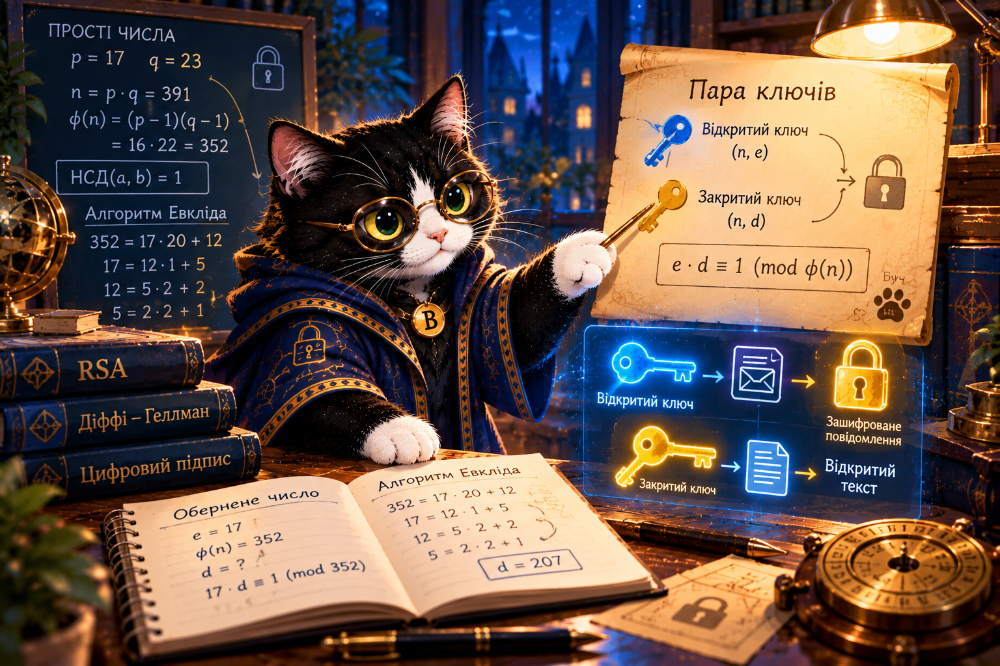

1. Прості числа
Просте число більше за 1 і має рівно два додатні дільники. 1 не є простим.
35 = 5 × 7, а 37 — просте.
Оберіть число.
Як відкрити ключ для всіх, а секрет залишити лише собі? Дослідимо прості числа, НСД, алгоритм Евкліда й обернені числа за модулем.

Буч хоче отримувати секретні повідомлення без попередньої домовленості про спільний таємний ключ. Спочатку треба опанувати математичні інструменти. Сьогодні ми ще не шифруємо справжнім RSA.
Просте число більше за 1 і має рівно два додатні дільники. 1 не є простим.
35 = 5 × 7, а 37 — просте.
НСД(a,b) = НСД(b, a mod b). Повторюємо до нульової остачі.
Шукаємо x, для якого a · x ≡ 1 (mod m). Воно існує лише за НСД(a,m)=1.
RSA використовує прості множники, арифметику за модулем та обернені показники. Діффі—Геллман використовує степені за модулем, щоб узгодити спільний секрет. Це різні завдання. Малі числа з уроку не забезпечують реальної безпеки.
Розкладіть числа в групи. Перетягування або дотик на смартфоні.
Відновіть кроки ділення та дослідіть НСД.
Досліджуйте коло остач і знаходьте обернені числа.
Зберіть математичну схему RSA та відрізніть її від Діффі—Геллмана.
def gcd(a, b):
while b:
a, b = b, a % b
return a
print(gcd(252, 105)) # 21Команда А бере випадкові малі числа без перевірок. Команда Б перевіряє простоту, НСД та існування оберненого. Який підхід математично обґрунтованіший? Чому цього ще недостатньо для реальної безпеки?
Пройти математичний сейф Буча